KOSS（コス）
アメリカを代表するヘッドフォンメーカー。1953年、ジョンＣ・コスが病院向けTVレンタル業を開始したのがその母体である。1957年にＢ-29のパイロット通信用ヘッドフォンをステレオに改造したモデルがセントルイスのショーに出品され、好評を得て、1958年に世界初（＊1）のステレオホンSP-3を発表し、スミソニアン国立歴史技術博物館に展示される。現在のヘッドフォン・ジャックはコスの製品の為に開発されたそうだ（＊2）。
1970年発売のPRO/4AAの他、非常に製品寿命の長い製品を持つ。また1968年にESP/6を発表するなど、コンデンサー型ヘッドフォンについても長い歴史を持つ。また中空のイヤパッド（ニューマライト）等国産メーカーではあまり見かけないの技術も多く、1970年代以降はパーツの自社生産にも乗り出している。
ヘッドフォンブランドとしては古くから知られたメーカーであるが、いつどんな形で日本に紹介されたかは不明な点が多い。管理人が調べた範囲では1972年頃、成川商会（＊3）が扱ったのが一番古い記録であるが、3機種が雑誌で紹介されているだけで、当時のラインナップの全貌はわからない。その後代理店については、1970年代中盤まではオーディオテクニカが、その後コスの日本法人、サンスイが扱い、1986年頃は一時正規輸入が途絶えた時期もある模様。1988年9月より、現在の代理店TASCAM（ティアック）の取扱になった。
（＊1，2）1979年の当時の代理店、「サンスイ」発行のテクニカルマニュアルより。真偽のほどは不明。
現在（2009年）ではコスの代理店である、ティアックが並行して扱っているベイヤーのカタログでは、世界初のステレオヘッドフォンは1950年の同社のＤＴ48Ｓらしい。ちなみにＤＴ48Ｓの記述は2008年版カタログから追加された記述で、2005年度のカタログにはない。逆に現在のコスのカタログでは「SP-3」の記述は「初めてのヘッドホン」となっている。
（＊3）大阪に本拠を置く商社。当サイトの掲載機種では他にＭＢを扱っていた。またゴールドリングのカートリッジを扱っていた時期もある。成川商会の扱っていたコスについては雑誌記事ではK/6LC、KO/727B、PRO/4AAが紹介されているが、コンデンサー型も扱っていたらしい。
KOSS（コス）の製品を以下のように分類する。（この分類は個人的な意見で、メーカーの分類ではありません）
なお1960年代あたりからコスのヘッドフォンが輸入されていたらしき記述もあるが、現時点では1970年代以前の状況については手元に資料がない。
�T.「Ｋ」シリーズ
1960年代からの伝統のコーン型ユニットを採用していた製品群（K/145、K/2+2はドーム型）。
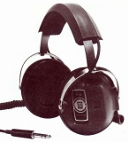
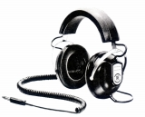
(左 K/6 右 KO/727B) （スリムライン・ダイナミック型）
当時のコスとしては比較的スリムなデザインの製品。角形のニューマライトクッション装備。
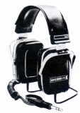
(K/145)(４チャンネル機） K/2+2
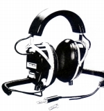
(K/2+2)
�U.「ESP」シリーズ
コンデンサー型ヘッドフォンの製品群。すべて純コンデンサー型で、エレクトレット型は現在のところ確認できない。ESP/6は左右のカプセル内に昇圧用トランスとセルフバイアス回路を内蔵した特異な製品。ESP/9はセルフバイアスとDCバイアスを切替可能なアダプターを持つ。なおコスの製品の歴史のページではESP/7という機種があるが、この機種が日本に輸出されたかは不明。
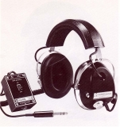
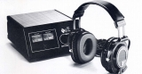
(左 ESP/6 右 ESP/10)
�V.「PRO」シリーズ(Phaseシリーズ含む）
1970年代に始まった密閉型のモニター機の製品群。PRO/4AAはマイナーチェンジはしたものの、いまだ現役モデル（2021/7月時点）
PRO/4AA PRO/4AAA PRO/4AAAPlus PRO/4X PRO/4XTC PRO/5LC PRO/600AA PRO/450 PRO/480
(４チャンネル機） PRO/5Q
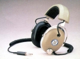
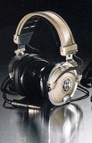
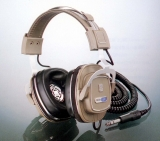
(左 PRO/4AA 中央 PRO/4AAA 右 PRO/4X)
�W.Phaseシリーズ
パラノミック・ソース・コントロール機能付きモデルで当時（1970年代）いくつかのメーカーが問題としていた再生空間・音場感の改善を目指したモデル。Phase/2+2は４チャンネル対応を加えた上級機。
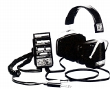
(Phase/2+2)
�X.「ＨＶ」シリーズ
1970年代に始まったオープンエア型の製品群。上位機種に「デシライト」とコスが名付けた軽量ダイアフラムとスポンジ製クッションを採用。「デシライト」はデュポン製のKOSS仕様の特注合成樹脂とのこと、HV/1A及びHV/1LCで採用した。なおHV/1や同時代の密閉型については「西ドイツ」製のポリエステルを使用との記載がある。
HV-X、HV-XLCはイヤパッドに密度差を設け、低音再生能力の改善を図ったモデル。
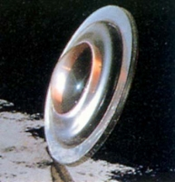
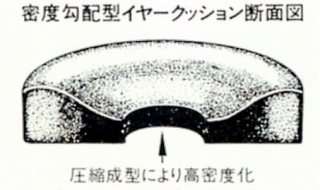
（デシライト振動板とHV-X、HV-XLCの密度勾配型イヤクッション）
HV/1easy Listener HV/1 HV/1A HV/1LC
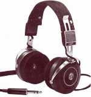
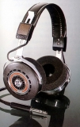
(左 HV/1easy Listener 右 HV/1A)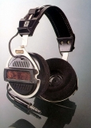
（HV-X）
�Y「モニター」シリーズ
コンデンサー型のESP-10と共通するデザインの製品群。このシリーズまでコス伝統のブームマイクの取付が無改造で可能。
TEAC/2 Technician/VFR DYNAMIC/10
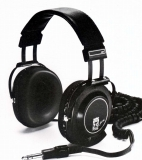
(DYNAMIC/10)
�Z.ポータブル型
KSPは、現在のPORTA PROの原型ともいえる機種。PORTA
PROは本国では1984年発売でサイト公開時（2009年）、25周年を迎えた。現在（2021年7月時点）も現役モデル。ただし日本に入ったのはTASCAM（ティアック）の取扱になってからの1988年である。PORTA
PRO2000は大小2種類のイヤパッドを交換可能なモデル。同様のコンセプトの商品にパナソニックのRP-HT137-S等がある。
KSP P-19 PORTA PRO PORTA PRO2000 SPORTA PRO
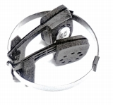
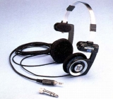
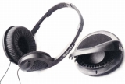
(左 KSP 中央 PORTA PRO 右 PORTA PRO2000)
�[.「A」シリーズ
1990年発表（日本未発売）のコンデンサー型、ESP-950と共通するデザインの製品群。
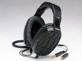
(A/250)
�\.「R」シリーズ
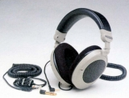
(R/200)
�].その他
「TNT、TD」シリーズ
その他
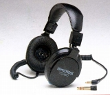
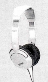
(左 TD/80 右 Mac/7)